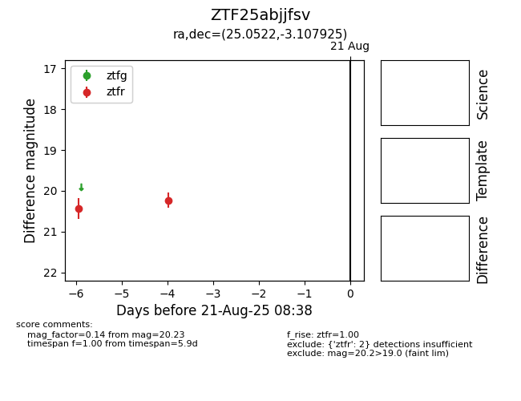

Target ZTF25abjjfsv at 2025-08-21 08:38, see:
FINK: fink-portal.org/ZTF25abjjfsv
Lasair: lasair-ztf.lsst.ac.uk/objects/ZTF25abjjfsv
ALeRCE: alerce.online/object/ZTF25abjjfsv
alt names
ZTF25abjjfsv (ztf,alerce)
coordinates:
equatorial (ra, dec) = (25.0522,-3.10792)
galactic (l, b) = (150.9221,-63.29790)
photometry
last ztfr=20.23
2 ztfr detections
